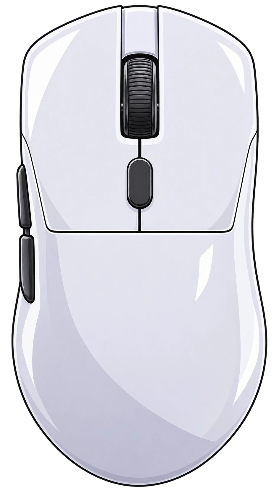
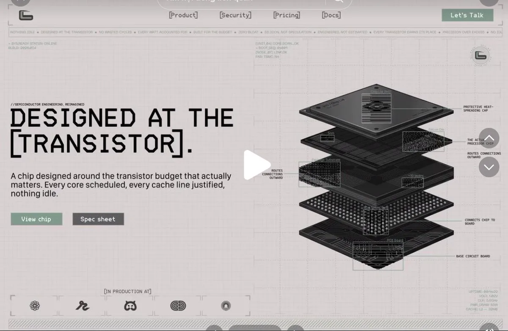
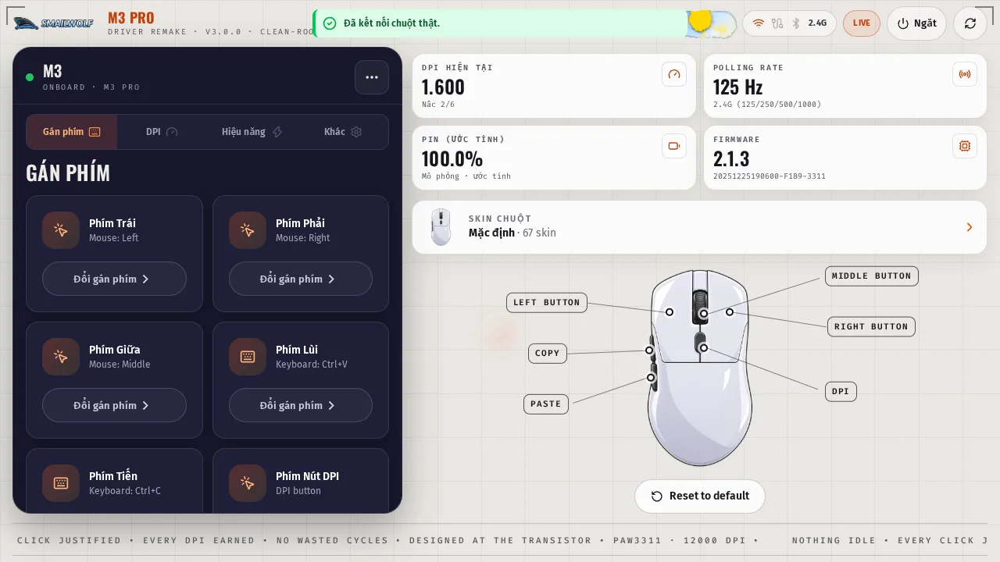

0 DPI
Max DPI
6 steps: 800 · 1600 · 2400 · 3200 · 6400 · 12000. Switch with the DPI button on the mouse — the app reads the exact step in use.
02 / SKIN SHELF — SCROLL DOWN TO SLIDE
Scroll down and the shelf slides sideways. Click a mouse to zoom in.


03 / THE CHIP INSIDE
Everything in this driver was measured from the real chip. No guessing, no made-up specs. The FR2012 runs at 48 MHz, has 512 KB of flash, and an ADC channel that reads battery voltage — the only way software can know how much battery is left.
Measured on the real mouse: DPI 800–12000
This mouse has no dedicated battery-gauge chip — the battery level in the app is an estimate based on polling rate, not an absolute measurement. Saying it upfront so there is no misunderstanding.
04 / SPECS — VERIFIED ON THE REAL MOUSE
0 DPI
6 steps: 800 · 1600 · 2400 · 3200 · 6400 · 12000. Switch with the DPI button on the mouse — the app reads the exact step in use.
0 Hz
2.4G: 125 / 250 / 500 / 1000 Hz. Wired: 1000 Hz. Bluetooth: 125 Hz. The app shows the exact rate currently running.
0 mAh
500 mAh cell, ~400 mAh usable. The app estimates from polling rate: 125 Hz ≈ 133 hours, 1000 Hz ≈ 29 hours. The real low-battery signal is the blinking red LED.
0 modes
Type-C wired · 2.4G via dongle · Bluetooth. The app auto-detects the active mode — no manual switching.
0 keys
Remap 6 keys: left, right, middle, back, forward, DPI. The DPI button is fixed, same as the stock app — this driver does not break that rule.
0 skins
67 skins ready for the 3D model in the app. Changing a skin never touches the real mouse — it is just the interface.
05 / DRIVER APP — REALLY RUNS ON WINDOWS
The screenshot below is app v3.0.6 running on Windows, connected to the real mouse over the 2.4G dongle. Every number is read from the mouse over USB HID — none of it is typed in by hand.

06 / DOWNLOAD — FREE, NO ACCOUNT
Latest build v3.0.6-rust · released 09/11/2026 · Windows 10/11 64-bit.
SHA-256 .setup: 614261efac40b8e5… · see the full list on GitHub ↗
The installer is unsigned, so Windows SmartScreen will warn — check the SHA-256, then click “Run anyway”. The app does not update mouse firmware and never touches your data.